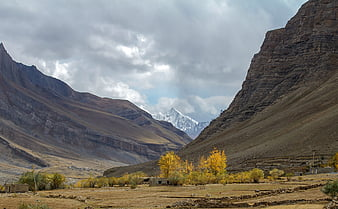
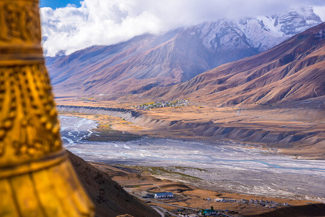
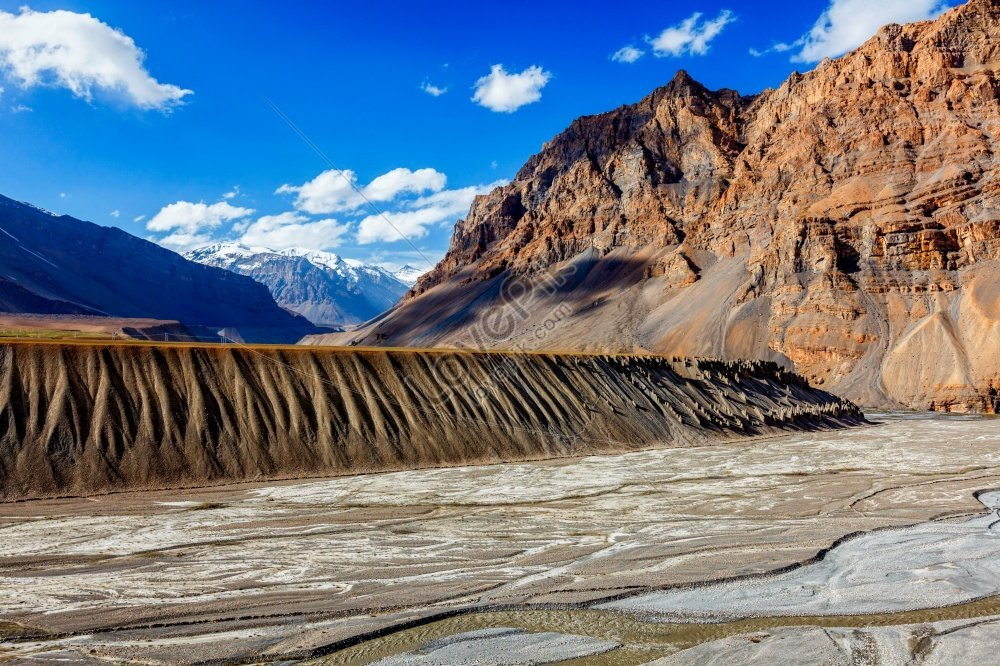

Highlights
- Key Monastery: A 1,000-year-old Tibetan Buddhist monastery perched on a hill, known for its breathtaking views and spiritual ambiance.
- Chandratal Lake: A crescent-shaped lake at high altitude, famed for its turquoise water, stunning reflections, and camping under starry skies.
- Pin Valley National Park: A unique cold desert biosphere with rare wildlife like the snow leopard, ibex, and Himalayan birds, perfect for trekking and nature photography.
- Komic Village: One of the world’s highest villages accessible by road, offering dramatic views of the Spiti landscape and housing the remote Komic Monastery.
- Tabo Monastery: A UNESCO-listed heritage site known for its ancient murals, stucco statues, and centuries-old Buddhist relics, often called the “Ajanta of the Himalayas.”
- Langza Village: Famous for fossil hunting, this village provides panoramic views of snow-capped mountains, including the stunning Chau Chau Kang Nilda peak.
- Dhankar Monastery and Fort: A cliff-top monastery with scenic views of the Spiti and Pin rivers’ confluence, offering hikes up to Dhankar Lake for serene solitude.


  
Offbeat Spiti
Day 1: Arrival in Manali - Drive to Chicham Village
- Activities: Scenic drive, acclimatization, exploring local life
- Highlights: Drive through Rohtang Pass and Kunzum Pass, Chicham Bridge (Asia’s highest bridge), sunset at Chicham village
- Overnight: Stay in a homestay in Chicham Village
Day 2: Chicham - Kibber - Gette Village
- Highlights: Kibber village (one of the highest inhabited villages), Gette Village for views of Spiti’s rugged landscape
- Activities: Short hikes, visit Kibber Wildlife Sanctuary for spotting blue sheep, ibex, and possibly snow leopards
- Spend time with locals in these remote villages to experience their lifestyle and culture.
Day 3: Kibber to Tashigang via Komic and Demul
- Highlights: Komic Village (one of the world’s highest motorable villages), Demul Village for cultural immersion
- Activities: Visit Komic Monastery, interact with locals in Demul, learn about sustainable tourism practices in Spiti
- Overnight: Homestay in Tashigang, a secluded and serene spot above the valley
Day 4: Tashigang to Lhalung Village
- Highlights: Lhalung Monastery, one of the oldest monasteries in Spiti, known as the “Golden Temple”
- Activities: Hiking around Lhalung, experience the rustic lifestyle of the Spitian people, explore ancient monasteries
- Overnight: Homestay in Lhalung
Day 5: Lhalung to Dhankar and Trek to Dhankar Lake
- Highlights: Dhankar Monastery and Dhankar Lake
- Activities: Visit the cliff-top Dhankar Monastery for stunning views of the Spiti and Pin rivers' confluence, trek to Dhankar Lake for a peaceful and scenic escape
- Overnight: Stay in Dhankar village for a quiet, authentic Spitian experience
Day 6: Return to Manali
- Activities: Scenic drive back to Manali, via Losar and the breathtaking Kunzum Pass
- Highlights: Take in the final views of the Spiti landscape before reaching Manali for departure